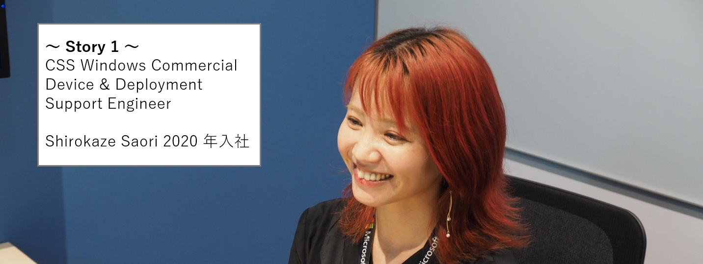

本記事はマイクロソフト社員によって公開されております。
私たちのチームでは、一緒にサポート エンジニア部門 (CSS: Customer Service & Support) を盛り上げてくれるエンジニアの方を募集しております。本記事では、私たち Windows Commercial で活躍されている多様なメンバーにフォーカスして紹介します！
～異業種から技術サポート職への大きなチャレンジを果たし、入社後に 2 度の出産を経て活躍している女性エンジニアのご紹介です～

異業種からのチャレンジと Microsoft でのキャリア
前職では営業職や旅館の女将として外国人観光客をおもてなしするサービス業を経験した後、IT 業界に足を踏み入れ System Engineer Service (SES) 企業で働き、その後 Microsoft に入社しました。私は、営業職やサービス業出身のため技術が強みでなかったという事、また入社が 2020 年 5 月 コロナ禍となりフルリモートのワークスタイルで勤務を開始した為、当時 Microsoft で活躍できるのか正直不安な部分もあったことも覚えています。
しかしながら、技術の経験が浅い中でも、素晴らしいメンターや周りのチーム メンバーのサポート、また体系化されたトレーニングを受けながら、フルリモート環境の中でも安心してオンボーディングが進み、サポート業務に従事する事ができています。
入社してからは Windows Commercial の Device and Deployment チームに配属され、OS のライセンス認証や 展開 (デプロイメント) に関する機能を主に担当していますが、現在では、Directory Services チームへのインターンも行っており、今後更なる製品知識の幅を広げていきたいと思っています。
Work Life Balance について
プライベートでは 2022 年と 2023 年に出産し、産休と育休を取得した経験があります。当時は休むことによるキャリアの停滞や、復帰後に今までと同じように働き続けることができるか不安な部分もありましたが、メンバーにもフォローしていただきながら、またリモートワークやフレックス制度を活用しながらフルタイムで働いています。
現在は、業後は定時で仕事を切り上げ、子ども達との時間を大切にしています。その分、朝方に趣味や仕事の時間を作っており、育児とプライベート、キャリアのバランスをうまく取れるように工夫しています。2 児の母として、育児をしながらの仕事は大変な面もありますが、柔軟な職場環境を活用しながら Windows Commercial 内のインターンも含め対応できる技術エリアを広げ、今後もどんどん新しいことに挑戦していきたいと考えています。
Windows Commercial の魅力
Windows Commercial には素晴らしいメンバーが多く在籍しており、高い技術力はもちろんのこと、人間的にも尊敬できる人が多く、多方面で良い刺激を受けることができ、自身の成長につながっていると感じています。また技術関連のトレーニングが多数そろっており、製品知識のキャッチアップもできますし、手に職をつけたい方にもお勧めなので、少しでも興味がある方は是非チャレンジしてみてください！
～Critical Response Team で日々お客様の緊急案件の課題解決に尽力するお父さんエンジニアのご紹介です～
マイクロソフトのサポートを目指したきっかけと今後のキャリアプラン
新卒でメーカー系の SIer に就職し、大手銀行向けのシステム構築に携わっていました。とあるプロジェクトでマイクロソフトのエンジニアと協業する機会があり、理論整然と顧客からの質問に回答し、また適切に議論をリードする姿に憧れ、自身もこんなエンジニアになりたいとの思いから、マイクロソフトのサポートエンジニアに応募し、2019 年に入社しました。
入社後は User Experience (UEX), Performance チームで Windows OS の UI 周りやシステムのパフォーマンスに関するサポートを行い、現在は兼ねてから希望していた Critical Response Team (CRT) と呼ばれる緊急案件を対応するチームに所属し、お客様のご運用環境で発生した緊急性の高い事案の対応に日々奮闘しています。
今後のキャリアプランとしては、引き続き現在のチームで Windows OS の知識や問題解決力を磨きつつ、将来的には技術コンサルタントなど、Windows Commercial のサポートで培った技術をもとに、お客様の製品導入の支援にも携わってみたいと考えています。
育休取得の経験とサポーティブな文化
マイクロソフトに入社してから 1 年も経たないうちに育休を取得しましたが、正直当時は不安がありました。オンボーディングが完了し、まさにこれからチームに貢献できるという状況で、長期の休暇を取ることに対する葛藤が非常に大きかったです。
しかしながら、育休を取る際にチームメンバーの方が非常に協力的で、引き継ぎや現在対応中の案件の調整について親身に相談に乗ってくれました。「マイクロソフト」「外資系」というと個人プレーの印象も強いかと思いますが、この職場にはサポーティブな文化があり、チーメンバーのフォローのお陰で、安心して育休を取得することができました。特にメンターや当時のマネージャーの方々が全面的にサポートしてくれたことに感謝しています。
Windows Commercial の魅力
Windows サポートの最大の魅力は Windows OS を通じて、コンピューターサイエンスを深く理解できることだと、私は感じています。Windows OS の仕組みを知っていくと、例えばネットワークの分野では RFC (Request For Comments) などの標準化を踏まえて設計していることなど、コンピューターサイエンスについて深く理解することができます。
このような知識をもとに Azure などのクラウド製品サポートなど、エンジニアとしてどのような環境にいっても対応できる、という実感がでてきますので、手に職をつけたい方にとってもお勧めですので、少しでも興味が有る方は是非チャレンジしてみていただきたいです。
<関連ブログ>